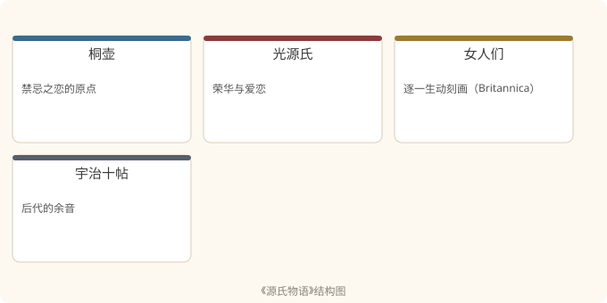

源氏物语
一、基本信息
| 作者 | 紫式部 |
|---|---|
| 成书/出版 | 约1010年完成（Britannica：likely completing it about 1010） The Tale of Genji — Encyclopaedia Britannica（百科全书） |
| 国别/地区 | 日本 |
| 时代 | 古代 · 平安时代 |
| 体裁 | 长篇物语 |
| 语言 | 日语（王朝文体） |

《源氏物语》结构图（主题·结构图）
二、创作背景
Britannica：'Written at the start of the 11th century, it is generally considered the world's first novel'——一般被视为世界最早的长篇小说。
Britannica（作者页）：'generally considered the greatest work of Japanese literature and thought to be the world's oldest full novel'（日本文学最高杰作）。
三、内容脉络
'Most of the story concerns the loves of Genji, and each of the women in his life is vividly delineated'（源氏的爱恋与诸位女性的生动刻画——Britannica）；共54章（Britannica：54 chapters of one character and his legacy）。
后半部：宇治十帖（通说待核）。
四、主要人物表
| 人物 | 身份 | 说明 |
|---|---|---|
| 光源氏 | 皇子·廷臣 | 'handsome, sensitive, gifted courtier'（Britannica） |
| 紫之上 | 伴侣 | 女主人公（通说） |
| 藤壶 | 父帝女御 | 禁忌之恋的原点（通说待核） |
| 浮舟 | 宇治十帖主人公 | （通说待核） |
五、主题与艺术特点
- 宫廷恋爱的荣光与代价（Britannica 语境）。
- '物哀'——哀感的审美（通说待核——本居宣长提出）。
- 中日诗歌修养的织体：'informed by a comprehensive knowledge of Chinese and Japanese poetry'（Britannica）。
六、影响与评论
- Britannica：世界最早的长篇小说（world's first novel）；54章贯穿'one character and his legacy'。
The Tale of Genji — Encyclopaedia Britannica（百科全书） - Britannica（作者页）：日本文学的最高杰作（the greatest work of Japanese literature）。
Murasaki Shikibu — Encyclopaedia Britannica（百科全书）
七、阅读建议
难点
- 平安朝称谓与官职。
- 和歌穿插——引文需读出声。
- 人物五代谱系——先画世系图。
- 丰子恺译本（人民文学出版社，通说待核）。
- 林文月译本（纯文学出版社/译林，通说待核）。
前三十章通读 → 宇治十帖（浮舟）→ 回读桐壶。
八、待核实
- 丰子恺/林文月译本出版信息核对。
- 宇治十帖章数（45—54）核对。
- 本居宣长'物哀'论出处核对。
本页主要来源
相关作品：红楼梦细雪罗生门（芥川龙之介短篇小说选）